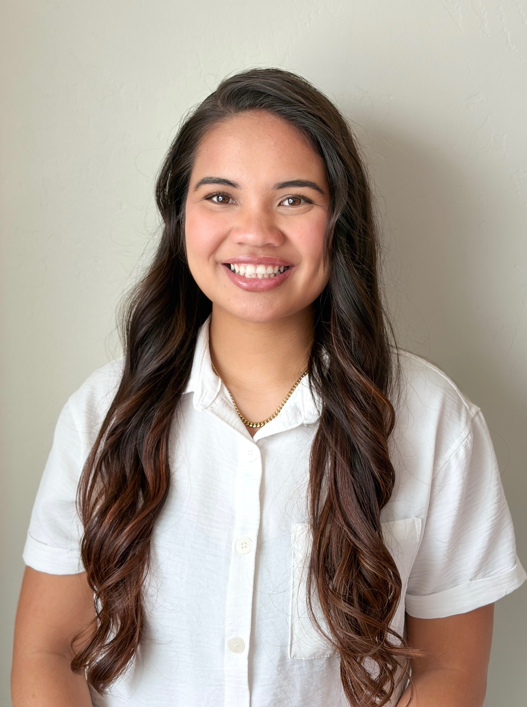

About Me

Aloha,
I'm Lagi
I am a Computer Science graduate from BYU–Hawaiʻi, with minors in Exercise & Sports Science Coaching and Visual Arts. Currently, I work as an Operations Assistant at Ala Kukui, managing retreat correspondence, assisting with program operations, coordinating events, and overseeing large-scale database management. I am seeking an entry-level front-end or web development role where I can apply my current skills, continue learning, and grow as a developer while contributing to projects that have real impact.
If you really want to know me, here's the spill: I have two keiki(children) and they keep my head spinning all the time. I am married to an amazing Samoan man from New Zealand. Some of my hobbies include baking, weightlifting, working on new projects and creating new cultural crafts that I grew up learning how to make.
I am passionate about health and fitness, and I believe everyone deserves access to tools and guidance that support their well-being. Looking ahead, I hope to develop a platform for my hometown of Hāna, Maui, designed to help residents set health goals, plan movement and nutrition, and make the most of the resources available to them. My vision is to create something that is accessible, culturally grounded, and adaptable to real-life constraints, reflecting the unique environment and lifestyle of the community I grew up in.